Architect
your mind
Rediseña tu forma de pensar en la era de la inteligencia artificial.
María José Muñoz

ideas en movimientoBloque 01
Rediseñar cómo piensas
¿Cuántas ideas has abandonado antes de intentarlas?
Tenemos más herramientas que nunca.
Pero seguimos pensando desde los mismos límites.
MENTALIDAD LIMITADA
“No sé hacerlo.”
↓
“Entonces no puedo.”
MENTALIDAD BUILDER
“No sé hacerlo.”
↓
“¿Cómo podría aprender a hacerlo?”
Porque una herramienta no decide qué posibilidades eres capaz de imaginar.
Tú sí.
Tu forma de pensar tiene una arquitectura.
¿DE DÓNDE VIENEN TUS MUROS?
Muchos no los construiste tú.
Casa
papás, familia
Trabajo
jefes, cultura de empresa
Escuela
profes, notas
Entorno
amigos, comunidad, redes
Muchos de tus límites no los elegiste. Los heredaste.
Y lo que heredaste, también lo puedes revisar.
HECHO
“No sé programar.”
INTERPRETACIÓN
“Entonces nunca podré construir un producto digital.”
PIENSA EN ALGO QUE QUIERES HACER.
¿Qué te estás diciendo para no empezar?
60
60 segundos.
DOS PREGUNTAS DISTINTAS
Can do/Will do
CAN DO · ¿Sé hacerlo?
Conocimiento, habilidades, herramientas. Se aprende.
WILL DO · ¿Voy a hacerlo?
Decisión, constancia, permiso para equivocarte. Se decide.
Aprendes
Quieres, todavía no sabes.
“No sé hacerlo todavía.”
Construyes
Quieres y sabes.
Muro
No sabes y no quieres.
Potencial dormido
Sabes, pero no lo usas.
WILL DO →
CAN DO →
IGNITE
No se trata de creer que puedes hacerlo todo.
Se trata de dejar de asumir que no puedes aprender.
En lugar de:
“No puedo.”
Pregunta:
“¿Qué necesitaría para intentarlo?”
En lugar de:
“No sé.”
Pregunta:
“¿Cuál es la primera cosa que debo aprender?”
En lugar de:
“¿Y si fracaso?”
Pregunta:
“¿Qué puedo descubrir con una prueba pequeña?”
No espera a tener todas las respuestas.
Construye una manera de encontrarlas.
Bloque 02
Pensar con inteligencia artificial
ANTES
“Necesito dominar todas las herramientas para comenzar.”
AHORA
“Puedo comenzar, aprender y prototipar con nuevas herramientas.”
La IA no tiene que ser tu punto de partida.
Puede ser tu acelerador.
PREGUNTA 01
“Dame ideas para emprender.”
PREGUNTA 02
“Quiero resolver un problema real. Ayúdame a identificar mis supuestos, encontrar oportunidades y diseñar una prueba pequeña para validar una idea.”
01 / TUTOR
Ayúdame a aprender algo nuevo.
“Explícame qué es una API como si viniera del diseño, y después hazme tres preguntas para comprobar si entendí.”
02 / SPARRING
Cuestiona mi razonamiento.
“Esta es mi idea y por qué creo que va a funcionar. Dime cuáles son los tres supuestos más débiles.”
03 / PROTOTIPADOR
Ayúdame a convertir una idea en una primera versión.
“Convierte esta descripción en la estructura y los textos de una página sencilla que pueda mostrarle a cinco personas.”
04 / ANALISTA
Ayúdame a organizar información y evaluar opciones.
“Agrupa por temas estas notas de entrevistas y dime qué información me falta para decidir.”
Las respuestas pueden tener errores. Verifica fuentes, datos y supuestos.
La IA puede ayudarte a ir más rápido.
Pero ir más rápido no significa ir en la dirección correcta.
Bloque 03
De la idea a la evidencia
BUILD
No necesitas comenzar con algo perfecto.
Necesitas construir algo que te permita aprender.
CASO HIPOTÉTICO
IDEA
Quiero solucionar un problema con tecnología.
LIMITACIÓN
“No sé desarrollar software.”
NUEVA PREGUNTA
“¿Cómo podría comprobar si el problema merece una solución?”
PRIMER EXPERIMENTO
Hablar con cinco personas, diseñar un prototipo sencillo con ayuda de IA y recoger feedback.
TU RETO DE 7 DÍAS
- 1. Identifica una limitación.
- 2. Transfórmala en una pregunta.
- 3. Diseña una prueba pequeña.
- 4. Utiliza IA si te ayuda a avanzar.
- 5. Aprende del resultado.
Tu siguiente versión no se descubre.
Se construye.
¿Qué vas a empezar a construir hoy?